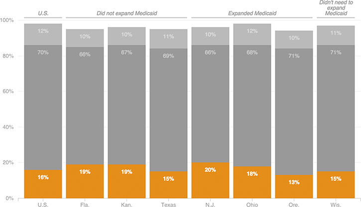

Benefits Mostly Unchanged
Poll: “Thinking about your health insurance benefits — that is, health care services that your insurance plan pays for — would you say they have
increased
,
decreased
or
stayed about the same
over the past two years?”
